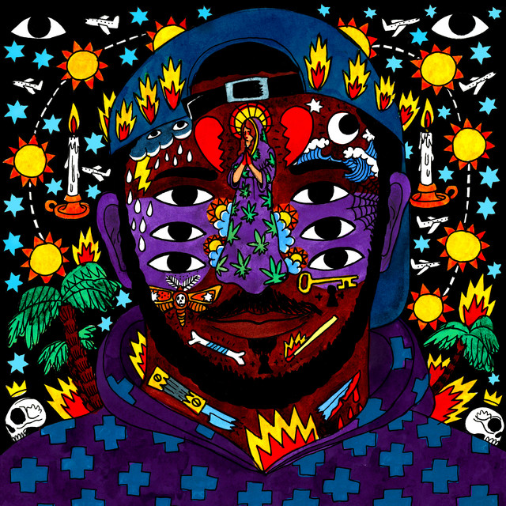
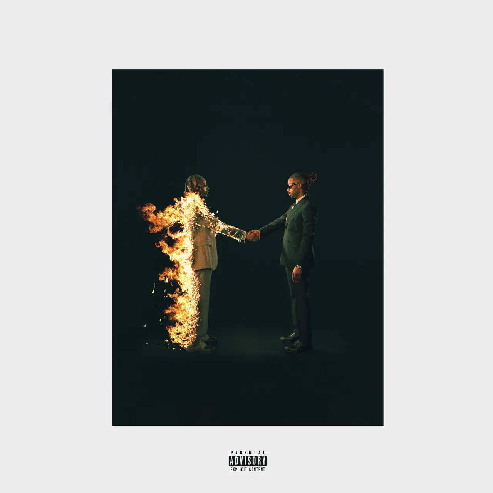

This website is for individuals who are curious on anothers opinion of music they might want to listen to next. The website is written by an album critic who rates albums out of 10 based on their discography, fluency & consistency, production, duration, lyricism, connections, distinction, popularity, how underrated or underappreciated it is, theme, impact, innovation & creativity and sometimes even the cover art (in this case not really). The purpose of this website from my point of view was to express my opinion on certain albums and singles that I believe have something about them that stands out from others.
Kanye West’s My Beautiful Dark Twisted Fantasy is undoubtedly his magnum opus, balancing album length and consistency with impressive experimentation, especially in the middle tracks. Known as one of the greatest producers, Kanye’s full range shines through in this album, showcasing his unmatched skill.
"Dark Fantasy" stands out as the album’s pinnacle. Despite its 245 million streams, it captures Kanye’s genius better than the more popular "POWER," which has over 1 billion streams. The track’s gradual build and powerful intro make it captivating, and though the latter half may feel excessive, its impeccable production keeps it grounded.
The album’s features are generally strong, though some could blend more seamlessly with the overall vibe. Kid Cudi’s contribution on "Gorgeous" is one of their best collaborations, elevating the track significantly.
Some of the album's most underappreciated gems deserve more recognition. "So Appalled," for example, only has 97 million streams but stands out for its production, with Pusha T’s unforgettable verse raising the track to another level. It’s one of the most underrated songs of the project.
However, not every track hits. "Blame Game," while strong initially, overstays its welcome, and the much-anticipated John Legend feature falls flat, with excessive autotune dulling his emotional delivery.
Overall, My Beautiful Dark Twisted Fantasy is a bold, ambitious album that pushes boundaries while maintaining brilliance. With slight room for improvement in the features, it remains Kanye’s best work and earns a 10/10 from me.
KAYTRANADA’s best-selling album truly lives up to its title, delivering a masterclass in rhythm and production. The album’s diverse range of styles showcases KAYTRANADA’s unmatched ability to blend genres seamlessly. Despite his undeniable talent, he remains one of the most underrated and underappreciated producers of our generation, and I’m eager to see his popularity grow over time.
The one track that absolutely stood out to me was "GOT IT GOOD," which, with about 93 million streams, deserves way more recognition. The feature from Craig David is a perfect match for the song's vibe, guiding the lyrical performance with effortless smoothness throughout. When compared to the more popular "YOU’RE THE ONE," which has over 210 million streams, it’s a tough call between the two. "YOU’RE THE ONE" also boasts a stellar feature and exceptional production. It's undeniably perfect for those summer vibes. But even with its widespread success, these two tracks don't hold a candle to what I consider the best feature and most underrated moment on the album, which was VIC MENSA’s scorching performance on "DRIVE ME CRAZY" sitting at only a mindblowing 28 million streams. The hip-hop-inspired production marks a bold departure from KAYTRANADA’s usual style, yet he absolutely nails it, seamlessly integrating his signature sound with the fresh energy of the beat.
Of course, no album is without its missteps. A track like “WEIGHT OFF” didn’t quite hit the mark. While not a terrible song, it felt like an experiment that didn’t quite land, blending Afrobeat and hip-hop in a way that didn’t showcase KAYTRANADA’s strengths. When you compare it to something like the small-but-sweet “BREAKDANCE LESSON N.1,” the difference is clear despite the fact we compare it to the smallest song on the album.
Overall, though, this is a brilliantly unique and cohesive project that lives up to the hype. 99.9% gets a solid 9.5/10 from me. KAYTRANADA continues to be one of my favorite artists, and I never get tired of diving into his discography. I’m super excited to see how he evolves in the years to come.
Metro Boomin has cemented his legacy as one of the greatest hip-hop producers, and his album Heroes & Villains is proof of his unmatched skill. With an impressive lineup of rap and R&B features, he seamlessly blends each artist’s style with his signature sound. The standout track, "Around Me," with 323 million streams, is a 10/10. It showcases Don Toliver’s unique vocal style and features hypnotic, psychedelic production that creates a dreamlike atmosphere.
Another highlight is "Walk Em Down," where 21 Savage delivers an effortless flow, while Metro’s beat elevates the track. The beat switch is brilliant, transitioning from gritty hip-hop to smooth R&B, with Mustafa’s vocals adding the perfect contrast.
However, not all features are flawless. "Creepin" has a haunting vibe, but 21 Savage’s verse disrupts the mood set by The Weeknd, not complementing the track as expected.
Despite some missteps, the album shines with standout collaborations. Travis Scott’s feature on "Niagara Falls" is perfect, blending effortlessly with Metro’s captivating beat, creating a late-night vibe that lingers long after the track ends.
Some tracks, like "Too Many Nights" and "Superhero," didn’t leave as strong an impression, and "Raindrops" fell flat compared to the energy of other songs. Travis Scott’s appearance here didn’t hit the same mark as his feature on "Niagara Falls."
Overall, Heroes & Villains is an exceptional album with stellar production, brilliant collaborations, and standout moments. Despite a few missteps, the highs justify a solid 9/10. Metro Boomin once again proves why he’s at the top of his game.
Drake has faced a challenging year, but Certified Lover Boy still showcases his undeniable talent and versatility across hip-hop, R&B, and soul. Despite its polarizing album cover, the music is well-crafted and engaging. The standout track for me is “N 2 Deep,” a collaboration with Future. With 154 million streams, this underrated gem features a captivating bassline and a game-changing beat switch, transitioning from mellow to an anthem with Future’s raspy vocals amplifying the energy. While “Fair Trade” with Travis Scott has nearly a billion streams, “N 2 Deep” edges it out for its chemistry and replay value. “Race My Mind” and “F*****g Fans” are two hidden gems with under 130 million streams. Both tracks carry a dark, atmospheric vibe similar to “N 2 Deep,” with "Race My Mind" featuring a late beat switch perfect for late-night vibes. “F*****g Fans,” despite its 80 million streams, stands out with haunting production reminiscent of legends like MIKE DEAN or The Weeknd, making it an underrated R&B track. The features on the album are strong, with Travis Scott on “Fair Trade” and 21 Savage on “Knife Talk,” but Future and Young Thug on “Way 2 Sexy” steal the show. Young Thug’s playful verse and smooth transition into the beat make him the MVP of the track, supported by TM88’s infectious beat. However, “You Only Live Twice” with Lil Wayne and Rick Ross is a weak spot, with Lil Wayne’s verse falling flat. With less than 100 million streams, it’s clear many fans share this sentiment. Overall, Certified Lover Boy is a strong showcase of Drake’s ability to blend R&B with his signature style. Despite a few lows, it earns a solid 9/10. With a more cohesive tracklist, this album would have resonated even more. Drake remains one of the top artists in the game.
Eminem earns his "King of Rap" title once again with Recovery, one of his most overlooked albums that ranks among his best work. Despite being part of his prime years (2000-2013), many tracks from this album flew under the radar. Nearly every song is memorable, with the middle section standing out.
Choosing a standout track is tough, but "25 To Life" takes the crown for its raw aggression, powerful beat, and Eminem’s intense delivery. However, “Love The Way You Lie,” with its massive 1.8 billion streams, steals the spotlight for its cultural impact and Rihanna’s haunting feature. It may lack the depth of “25 To Life,” but its mass appeal makes it iconic.
Hidden gems like “Talkin’ 2 Myself” and “Going Through Changes” offer personal reflections on Eminem’s struggles, particularly with his daughter and family, while “So Bad,” with only 85 million streams, is one of the album’s best. Despite its underrated status, the catchy beat and infectious lyrics make it a standout.
Lil Wayne’s fiery verse on “No Love” channels his peak years, making it another standout moment. Though it has 370 million streams, it still deserves more recognition.
However, not every track hits the mark. “Untitled” is forgettable, and “You’re Never Over” exposes Eminem’s vocal limitations. Still, despite these missteps, Recovery remains a solid 9/10. With a bit more consistency, it could’ve been perfect, but it’s undeniably one of my favorite Eminem albums.
Kendrick Lamar’s surprise album drop in November 2024 was a shock, especially considering its success as one of his best-selling projects. The album, with subtle jabs at Drake, was clearly shaped by their public feud but also marked a major energy shift in Kendrick's career. Beyond the drama, the album showcases Kendrick’s evolving style.
One track that deserves more recognition is “Wacced Out Murals.” Its electric, cinematic production and unique vibe should have sparked more attention, but it gets overshadowed by “Luther,” which, though not bad, doesn’t hit the same highs. Then there’s “Reincarnated,” which channels the spirit of 2Pac and might be one of the album's best tracks, yet it remains underrated with less than 110 million streams. Both songs are concept-driven, raw, and layered, making the more commercially accessible tracks feel less compelling by comparison.
Standout moments include “Man at the Garden,” an anthem of self-assurance, and “Gloria,” which, with SZA’s feature, elevates the vibe and represents the album's themes of victory, especially over Drake. It’s easily the best feature on the album.
However, "Luther" still feels like a misfire, and “Dodger Blue” left me confused. While not bad, its short length and lack of depth make it forgettable compared to other tracks.
Though the album has standout moments, it doesn't compare to Kendrick's masterpieces like good kid, m.A.A.d city or To Pimp a Butterfly. GNX feels like one of his weaker albums, despite some impressive tracks. Overall, I give it a 7/10. Kendrick can do better, but there’s enough here to keep fans interested.
After four long years, Baby Keem is finally gearing up to release his new project, Child with Wolves, this year. In the meantime, let’s dive into his previous album, The Melodic Blue, which has its highs and lows but leaves a lasting impact.
There are a few standout tracks that truly deserve more recognition. "trademark usa" is a perfect example. Its seamless transitions, particularly the aggressive beat switch, showcase Keem’s versatility. The first half is smooth and laid-back, while the second half ramps up into a hard-hitting anthem. Another gem is "16," which brings pure summer vibes with Keem’s impressive vocal performance. His singing on this track is his best yet, showcasing both range and emotion, a surprising contrast to his cousin Kendrick Lamar’s style.
The album also features great collaborations. Kendrick Lamar shines on "family ties" and "range brothers," while Don Toliver adds smooth vocals to "cocoa." But the real standout feature comes from Brent Faiyaz on the deluxe version of "lost souls." His verse takes the track to another level, overshadowing Keem’s original part and proving his undeniable talent.
However, not every track hits the mark. "a life of pain" from the deluxe edition was so bad it became unintentionally funny, and "south africa" fell flat despite Keem’s solid flow. The beat just didn’t work, leaving the track feeling lackluster.
Overall, The Melodic Blue had some great moments but also felt a bit inconsistent. With 26 songs (including the deluxe), there was definitely some filler that could’ve been trimmed. Had Keem cut down the length and maintained consistency, this could have easily been a 10/10. For now, I’m giving it a solid 7/10. Baby Keem’s potential is undeniable, and if he continues to refine his sound, the future looks bright.
I wasn’t a huge fan of The Weeknd before this album, but it left me speechless. His latest release showcases impressive lyrical depth, vocal performance, and consistency across nearly every track. It stands as his most polished work, surpassing After Hours.
There are several standout songs. "Cry For Me" and "Timeless" (featuring Playboi Carti) instantly grabbed my attention, along with "Sao Paulo." However, the second half of the album outshines the first. "The Abyss" is a cinematic masterpiece, especially with Lana Del Rey’s collaboration. At first, I wasn’t sold on it, but the layers of instrumentation and the drop gave me chills. Lana’s final verse is perfection. While it’s hard to pick the best song, "Baptized in Fear" is a future fan favorite, and "Open Hearts" showcases The Weeknd’s skill at blending EDM with soulful lyrics.
"Take Me Back To LA" is a top 5 track, with a lush, captivating beat reminiscent of "In Your Eyes." "Red Terror" is an overlooked powerhouse, with its intense rhythm and beat, but I wish it were longer. Still, it transitions perfectly into "Without a Warning," which deserves way more attention despite its 19 million streams. The production on both tracks is top-tier, showing off The Weeknd’s full range.
A surprise feature on "Reflections Laughing" with Florence + The Machine and Travis Scott is another highlight. Florence’s ethereal vocals and Travis’s unique bars add an unexpected layer to the song.
While most of the album is stellar, "Opening Night" felt more like an interlude, lacking the depth to make it memorable.
Despite this minor flaw, Hurry Up Tomorrow is The Weeknd’s finest produced album, closing the After Hours trilogy in an exceptional way. The consistency, transitions, and remarkable final tracks make it a 10/10. It’s easily Album of the Year for me.